14. Monitoring Dashboard
OmniDB 2.4.0 introduced a new cool feature called Monitoring Dashboard. We know a picture is worth a thousand words, so please take a look:
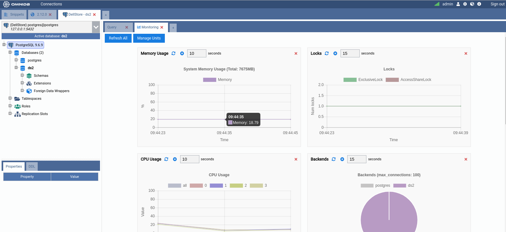
As you can see, this is a new kind of inner tab showing some charts and grids. This Monitoring inner tab is automatically opened once you expand the tree root node (the PostgreSQL node). You can keep it open or close it at any time. To open it again, right-click the root node and click on Dashboard.
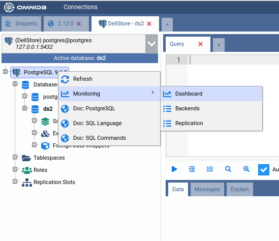
The dashboard is composed of handy information rectangles called Monitoring Units. Here is an example of Monitoring Unit and its interface elements:
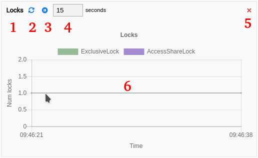
- 1: Title of the Monitoring Unit;
- 2: Refresh the Monitoring Unit. Depending on the type, clicking on this button will refresh the entire drawing area or just make the chart acquire a new set of values;
- 3: Pause the Monitoring Unit;
- 4: Interval in seconds for automatic refreshing;
- 5: Remove the Monitoring Unit of the Monitoring Dashboard;
- 6: Drawing area, that will be different depending on the type of the Monitoring Unit.
Types of Monitoring Units
Currently there are 3 types of Monitoring Units:
- Grid: The most simple kind, just executes a query from time to time and shows the results in a data grid.
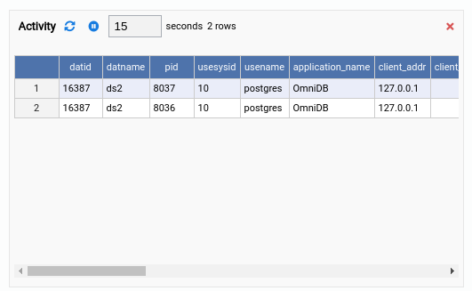
- Chart: Every time it refreshes, it renders a new complete chart. The old set of values is lost. This is most useful for pie charts, but other kind of charts can be used too.
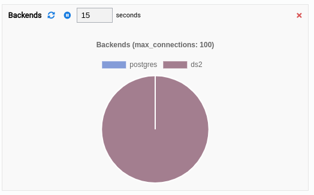
- Chart-Append: Perhaps this is the most useful kind of Monitoring Unit. It is a chart that appends a new set of values every time it refreshes. Line or bar charts fit best for this type. The last 50 set of values are kept by the component client-side to be viewed by the user.
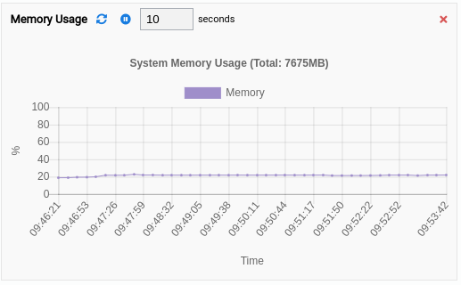
Showing and hiding units in the dashboard
If you click in the button Refresh All, then all Monitoring Units will be refreshed at once. You can also remove undesired Monitoring Units by clicking in the Remove button. Let us go ahead and remove all units from the dashboard, making it empty:
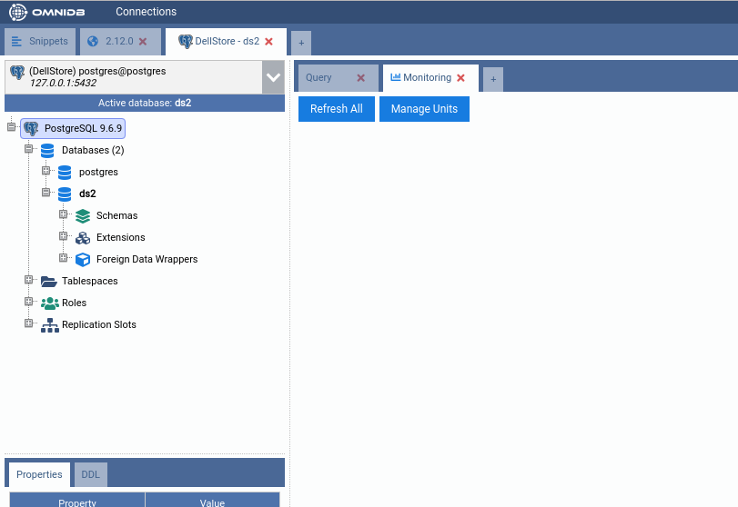
All Monitoring Units that come with OmniDB are open source and available in this
repository (feel free to contribute). But
be aware that some Monitoring Units require the plpythonu script to be
installed in the database. Please refer to the instructions specific to your
operating system on how to install plpythonu if you desire to use and create
Monitoring Units that use plpythonu.
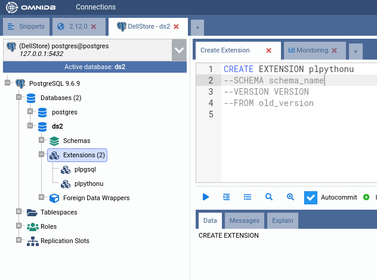
Now that our dashboard is empty, let us add some units. Click on the Manage Units button.
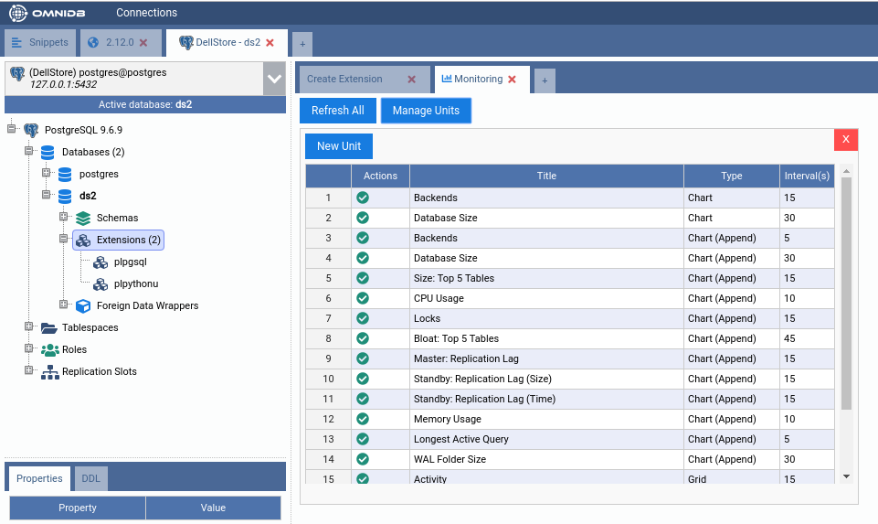
Click on the green action to add the Monitoring Units called CPU Usage and
Memory Usage. Bear in mind that both units require plpythonu extension in
the database. CPU Usage also requires that the tool mpstat should be
installed in the server. Also both units are of type Chart-Append. Wait for
some seconds and you will have a dashboard like this:
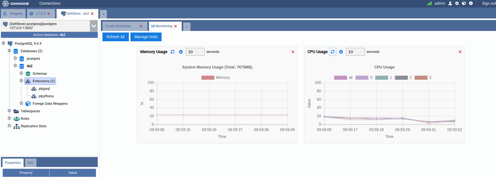
In a similar way, you can add and remove any unit you want to customize the dashboard the way you want.
Writing custom Monitoring Units: Grid
OmniDB provides you the power to write your own units and customize existing
ones. Everything is done through Python scripts that run inside a sandbox.
Beware that units powered by plpythonu can have access to the file system
the database user also has access to, and any Monitoring Unit have the same
permission as the database user you configured in the Connection.
To create a new Monitoring Unit, click on the Manage Units button in the dashboard, then click on the New Unit button. It will open a new kind of inner tab like this:
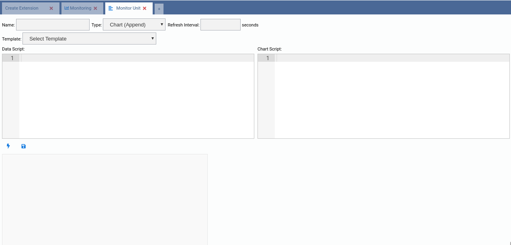
The easiest way to write a custom unit is to use an existing one as template. Go ahead and select the (Grid) Activity template:
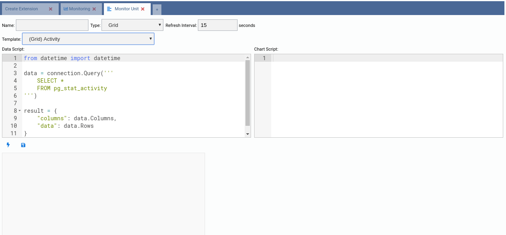
Note how OmniDB fills the Data Script source code. This script is responsible for generating data for the unit every time it refreshes. As a grid unit is nothing else but a grid of data, we can rely on only this script for now.
Now let us take a look at the source code of this template:
from datetime import datetime
data = connection.Query('''
SELECT *
FROM pg_stat_activity
''')
result = {
"columns": data.Columns,
"data": data.Rows
}
It is simple enough. It executes an SQL query into the current connection using
the reserved connection variable. Also, the grid unit type expects its results
in a JSON variable that must be called result and must have the attributes
"columns" (an array of column names) and "data" (an array of rows, each row
being an array of values). The connection.Query() function already does the
job pretty well, so let us just change the SQL query this way:
from datetime import datetime
data = connection.Query('''
SELECT random() as "Random Number"
''')
result = {
"columns": data.Columns,
"data": data.Rows
}
Copy and paste the above Python code into the Data Script text field and then click on the Test (lighting) button:
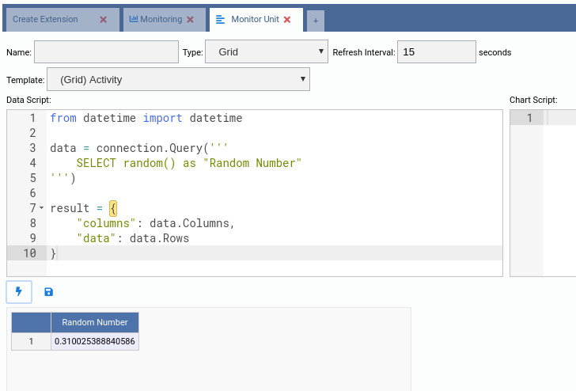
Note how the grid was rendered in the preview drawing area. You can click the Test button as many times as you want. Now we will give the unit a name, set a refresh interval and then hit the Save button:
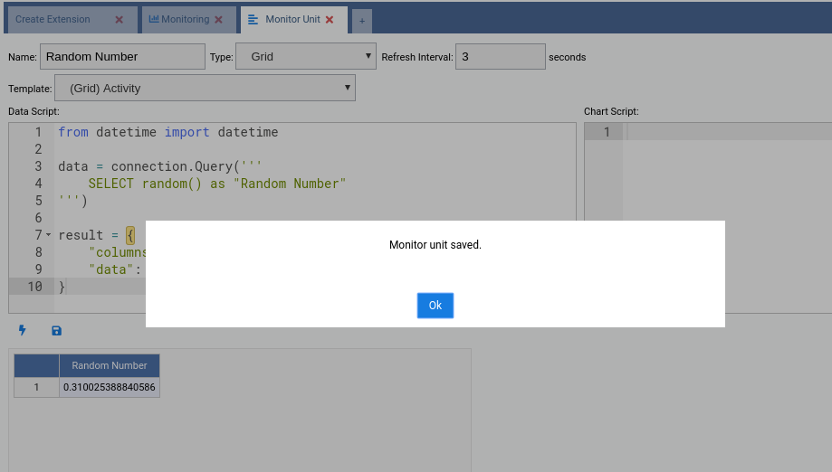
Click the OK button and then close the edit tab. Our new Monitoring Unit will be in the list of available units. As we created this unit, we can either add it to the dashboard, edit it or remove it. Let us add it to the dashboard (green action):
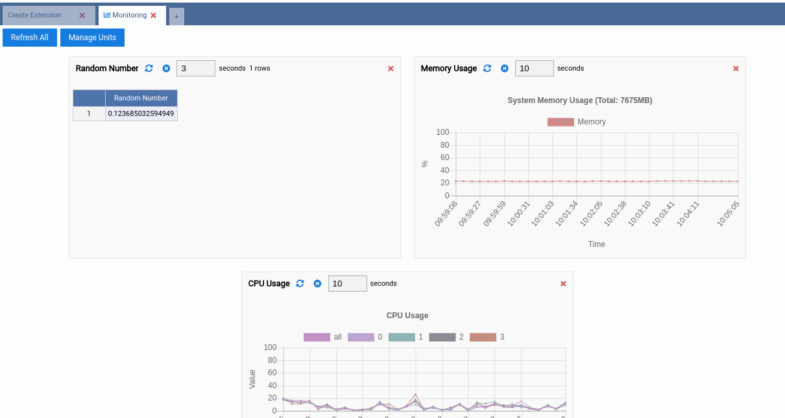
Writing custom Monitoring Units: Chart
Click in the Manage Units button and then in the New Unit button. This time we will create a Chart Monitoring Unit. So choose (Chart) Database Size as a template.
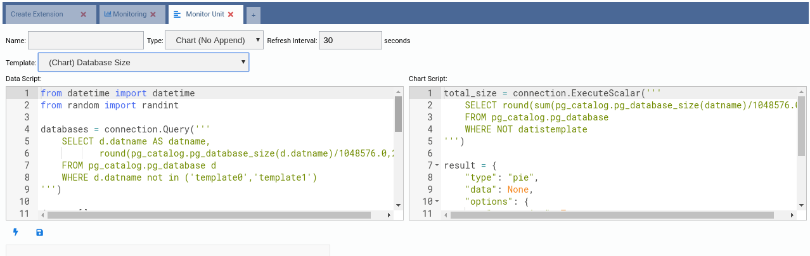
The source code of this kind of unit is more complex. There are two scripts:
- Data Script: Executed every time the unit is refreshed;
- Chart Script: Executed only at the beginning to build the chart.
The chart units are based in the component Chart.js and each chart type contains a specific JSON structure. The best approach to build new chart units is to start from a template and also check the Chart.js docs to see every property that can be added to make the output even better for each situation.
Let us take a look at the Data Script:
from datetime import datetime
from random import randint
databases = connection.Query('''
SELECT d.datname AS datname,
round(pg_catalog.pg_database_size(d.datname)/1048576.0,2) AS size
FROM pg_catalog.pg_database d
WHERE d.datname not in ('template0','template1')
''')
data = []
color = []
label = []
for db in databases.Rows:
data.append(db["size"])
color.append("rgb(" + str(randint(125, 225)) + "," + str(randint(125, 225)) + "," + str(randint(125, 225)) + ")")
label.append(db["datname"])
result = {
"labels": label,
"datasets": [
{
"data": data,
"backgroundColor": color,
"label": "Dataset 1"
}
]
}
Here we can see that the reserved variable connection is still being used to
retrieve data from the database. Bear in mind that this variable is always
pointing to the current Connection.
This template is for a Pie chart, which contains only one dataset and three arrays for the data:
data: One value per slice;color: One color per slice;label: One label per slice.
This way, data[0], color[0] and label[0] refer to the first slice, while
data[1], color[1] and label[1] refer to the second slice, and so on.
This script must return a variable called result and also needs to be a JSON
like in the above script.
So right now you are probably guessing that you just need to change the SQL
query to make the chart behave different. Well, in terms of data and datasets,
you guessed right. So let's change the SQL query of this chart to compare sizes
of tables of schema public. Also change the references from datname to
tablename, as we have changed the column name.
from datetime import datetime
from random import randint
databases = connection.Query('''
SELECT c.relname as tablename,
round(pg_catalog.pg_total_relation_size(c.oid)/1048576.0,2) AS size
FROM pg_catalog.pg_class c
INNER JOIN pg_catalog.pg_namespace n
ON n.oid = c.relnamespace
WHERE n.nspname = 'public'
AND c.relkind = 'r'
''')
data = []
color = []
label = []
for db in databases.Rows:
data.append(db["size"])
color.append("rgb(" + str(randint(125, 225)) + "," + str(randint(125, 225)) + "," + str(randint(125, 225)) + ")")
label.append(db["tablename"])
result = {
"labels": label,
"datasets": [
{
"data": data,
"backgroundColor": color,
"label": "Dataset 1"
}
]
}
Copy and paste the above script into the Data Script field and then hit the Test button:
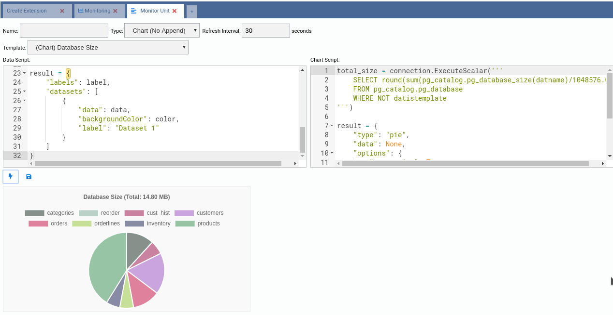
Apparently the chart is almost done. We need to fix the title, it still says Database Size, when this chart is about table size. Any information about the format of the chart itself is defined in the Chart Script text field. Let us understand the current source code:
total_size = connection.ExecuteScalar('''
SELECT round(sum(pg_catalog.pg_database_size(datname)/1048576.0),2)
FROM pg_catalog.pg_database
WHERE NOT datistemplate
''')
result = {
"type": "pie",
"data": None,
"options": {
"responsive": True,
"title":{
"display":True,
"text":"Database Size (Total: " + str(total_size) + ")"
}
}
}
Easy enough. We can make use of the reserved variable connection to retrieve
data in the Chart Script too. This is mainly used to put information in the
chart title. The variable result must be defined here. Note how its JSON
value defines a pie chart and the title. So we just need to change the query and
adjust the title, this way:
total_size = connection.ExecuteScalar('''
SELECT round(sum(pg_catalog.pg_total_relation_size(c.oid)/1048576.0),2) AS size
FROM pg_catalog.pg_class c
INNER JOIN pg_catalog.pg_namespace n
ON n.oid = c.relnamespace
WHERE n.nspname = 'public'
AND c.relkind = 'r'
''')
result = {
"type": "pie",
"data": None,
"options": {
"responsive": True,
"title":{
"display":True,
"text":"Table Size (Total: " + str(total_size) + ")"
}
}
}
Copy and paste the above Python code into the Chart Script. Then click in the Test button:
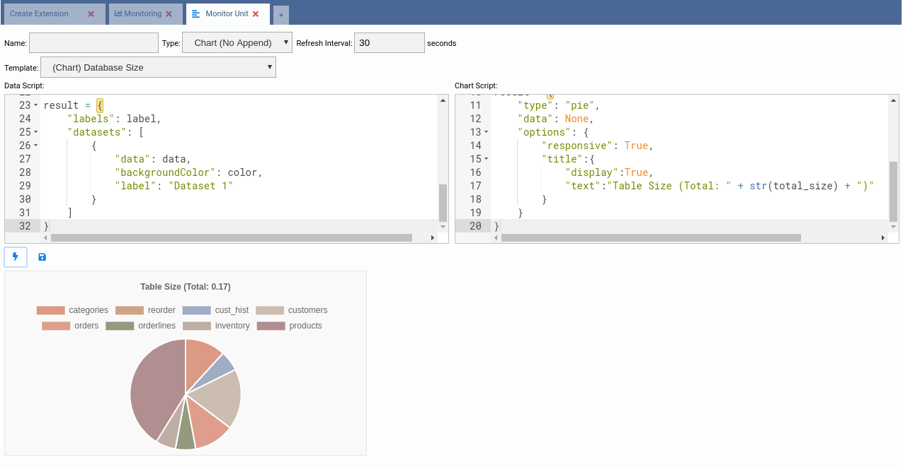
Now that the chart finally works the way we want, we can give it a title, adjust the refresh interval and then click in the Save button. After that we can add it to the dashboard.
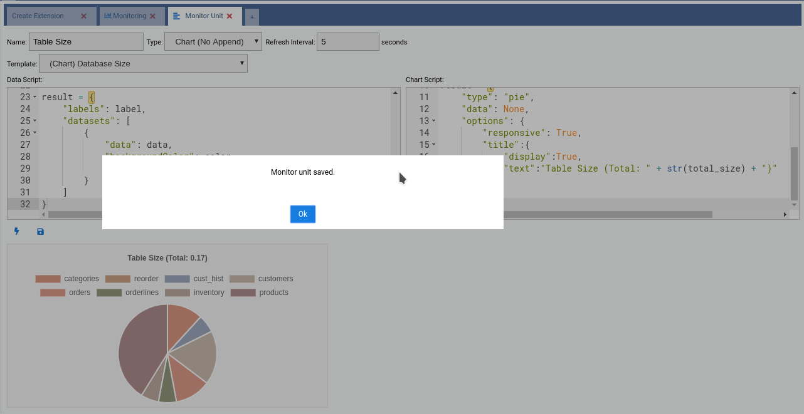
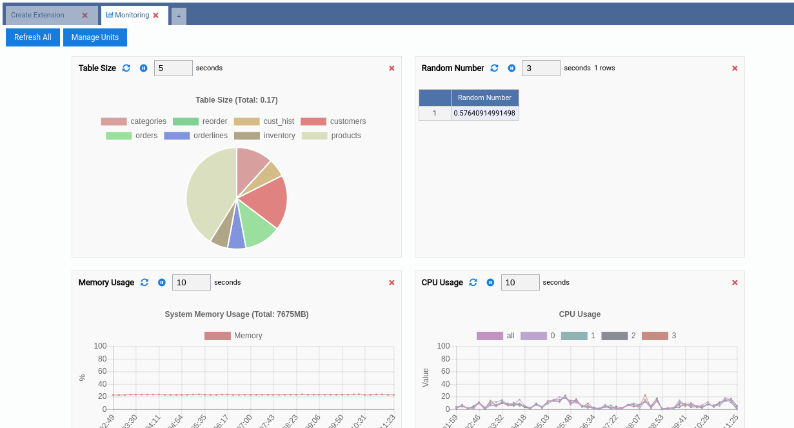
Writing custom Monitoring Units: Chart-Append
Now for the last, but most interesting kind of Monitoring Unit: Chart-Append. It is interesting because there is a wide range of applications for these units, since they keep recent historic data that allows us to see a comparison of values.
Go ahead and add a new chart using (Chart (Append)) Size: Top 5 Tables as template:
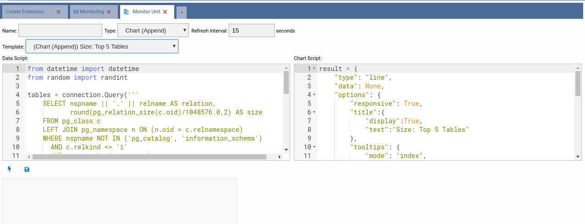
Now take a look at the source code of both Data Script and Chart Script. It is not too different from the Chart units. The dataset creation is a bit more complex as it involves other JSON settings, but that's all.
As an exercise, based on this chart, create another one called Size: Top 20 Tables. It should look like this:
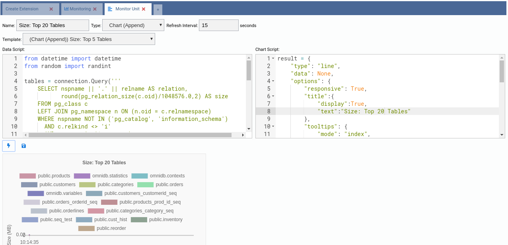
Now save it and add it to your dashboard:
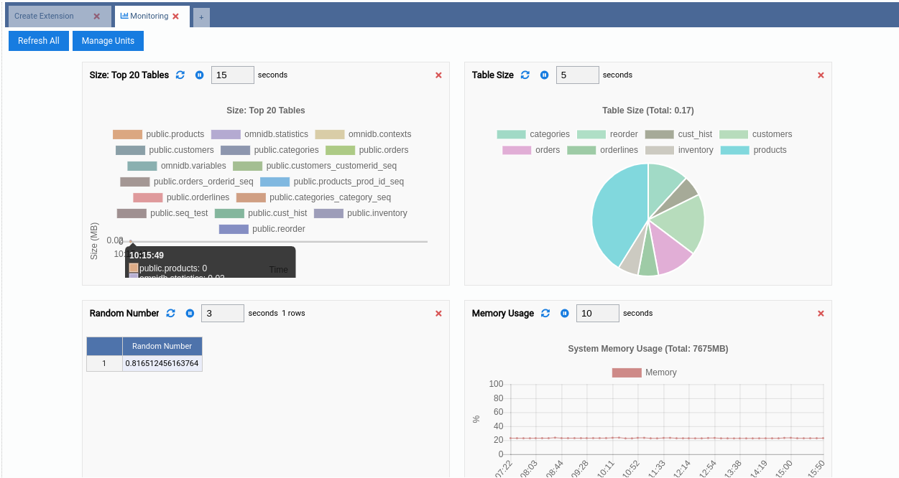